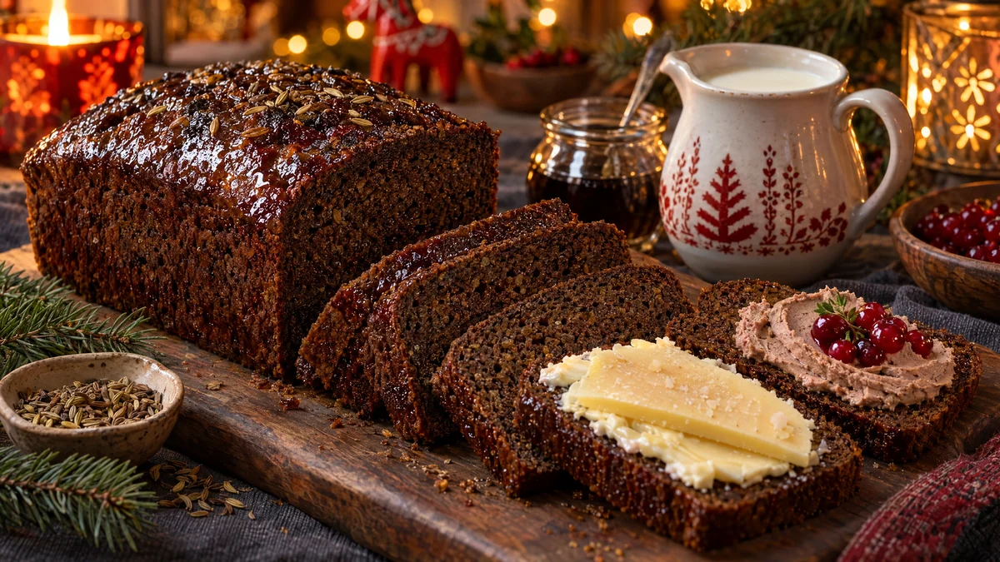

RESTFEST · RECEPTBröd · Fika & bakning
Mörk kavring med filmjölk och sirap
Filmjölken som närmar sig bäst före-datum, en skvätt mörk sirap och rågmjöl rörs ihop utan jäst och utan knådning. Kavringen gräddas långsamt till ett mörkt, saftigt och lite sött bröd som doftar fänkål och anis. Tunna skivor med smör och ost, eller till sill och leverpastej på julbordet.
- Förberedelse
- 10 min
- Tillagning
- 70 min
- Portioner
- 1 limpa (ca 20 skivor)
- Nivå
- Nybörjare
 Det här behöver du
Det här behöver du
Tryck på + vid det du behöver köpa.
Kavring
Glans
Gör så här
- Sätt ugnen på 175 grader. Smörj en avlång brödform, ca 1½ liter, och strö den med ströbröd.
- Krossa brödkryddorna lätt i en mortel.
- Blanda rågmjöl, grahamsmjöl, vetemjöl, bikarbonat, salt och brödkryddor i en bunke.
- Rör ner filmjölk och sirap, bara tills allt är blandat. Smeten ska vara tjock och kladdig.
- Häll smeten i formen och jämna till ytan.
- Grädda i nedre delen av ugnen i 60–70 minuter, tills en provsticka i mitten kommer ut torr.
- Rör ihop sirap och varmt vatten och pensla brödet direkt när det kommer ut ur ugnen.
- Stjälp upp kavringen och låt den svalna inlindad i en kökshandduk, så blir skorpan mjuk.
Dekoration och servering
- Kavringen är godast dagen efter, när den har satt sig. Skär den i tunna skivor med en vass kniv.
- Servera med salt smör och lagrad ost, eller med leverpastejmoussen i recept 8.
- På julbordet är den självklar till sill, gravlax och julskinka.
- Kavringen håller ca en vecka inslagen i plast och kan frysas i skivor.
Mått och ugnstemperaturer
Måtten är svenska (dl, msk, tsk, krm). Ugnstemperaturerna gäller vanlig ugn med över- och undervärme; med varmluft, sänk med 20 grader.